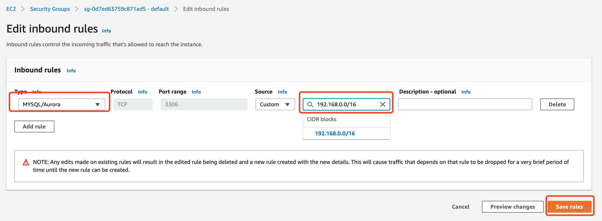

02-应用部署和配置
请确保操作的区域是 AWS新加坡区域（ap-southeast-1）。
创建数据库
此处的数据库平台包括：Aurora MySQL 平台和引擎。
在AWS的Console上搜索RDS，打开Amazon RDS服务。
- 创建DB Subnet group
点击Subnet groups，点击Create DB Subnet Group按钮
在Name和Description分别输入lab1，VPC选择前面创建的vpc1
Add subnets选择上一个步骤里面创建的两个private subnet(注意看CIDR来区分)，点击Create按钮
- 创建Aurora MySQL database
点击Create database按钮
默认选择Standard create，
在Engine type默认选择Amazon Aurora，
在Edition默认选择 Amazon Aurora with MySQL compatibility
在Capacity type默认选择 Provisioned，
在Version选择最新版本 Aurora(MySQL5.7) 2.09.0，
在Templates默认选Production
在DB cluster identifier里面输入database-lab1，
在Password输入你设定的密码 [注意：要记录好密码]
请牢记此处你设置的密码。
在DB instance size选择 Bustable classes(includes t classes) ,
在下拉框中选择db.t3.small
在Availability & durability默认选择 Create an Aurora Replica or Reader node in a different AZ (recommended for scaled availability)
在Connectivity里面选择前面创建的vpc1
点开 Additional connectivity configuration，在Subnet group里面选择之前创建的lab1
其他保持默认，点击Create database按钮
等几分钟，数据库的状态Status会变为Available。拷贝database cluster writer的endpoint（例如此处为 database-lab1.cluster-cnszku2km8ca.us-east-1.rds.amazonaws.com）
此处的截图的区域其实并不是新加坡区域（写文档时还不确定一定使用新加坡区域），所以此处的URL地址仅供参考。
接下来修改security group：选择Writer instance，点击VPC security groups链接
然后点击Edit inbound rules按钮
在Type里面选MYSQL/Aurora，source里面输入192.168.0.0/16，点击Save rules按钮。

创建EC2
- 创建keypair
打开EC2服务
点击Key Pairs，点击Create key pair按钮
在Name输入lab1,
File format根据您当前的使用的ssh软件选择：pem（Linux/Mac） or ppk（Windows）；
点击Create key pair按钮后会下载一个pem或ppk到您的本地机器上。

- 创建EC2实例
打开EC2服务
点击Instances， 点击Launch instances按钮

点击Amazon Linux 2 AMI (HVM), SSD Volume Type后面的Select按钮
选择t3.small，点击Next:Configure Instance Details按钮
在Network选择前面创建的vpc1，subnet选择publicsubnet1，Auto-assign Public IP选择Enable，点击Next:Add Storage按钮
Storage取默认值即可，点击Next:Add Tags按钮，Key填入 Name（默认情况下，标签tag为Name的Value会直接显示在控制台上），Value填入 lab1 ，点击Next:Configure Security Group
Security group name输入lab1，修改Description，点击Add Rule按钮，从Type列表里面选择HTTP，点击Review and Launch按钮。
点击Launch按钮
选择之前创建的keypair lab1，勾选 I acknowledge，点击 Launch Instances按钮。
等待几分钟后EC2的状态Status变为Running。拷贝 “Public IPv4 DNS（此处为： ec2-3-236-166-17.compute-1.amazonaws.com）”

- 配置ssh远程访问EC2
在您的客户端电脑上执行下列命令，以下以Mac或Linux操作系统的命令行为例（把 “Public IPv4 DNS” 换为上一个步骤里面的拷贝的DNS）
chmod 400 lab1.pem
ssh -i lab1.pem ec2-user@<Public IPv4 DNS>
# ssh -i lab1.pem ec2-user@ec2-3-236-166-17.compute-1.amazonaws.com
按提示输入 yes
如果您使用的事windows操作系统，请下载安装PuTTY 参看下列链接配置 https://docs.aws.amazon.com/quickstarts/latest/vmlaunch/step-2-connect-to-instance.html
配置测试应用
此处主要配置EC2，安装Apache、MySQL、PHP并配置，配置Aurora MySQL，配置PHP页面
安装httpd、php、mysql
sudo su -
yum update -y
yum install -y httpd php mysql57-server php-mysqlnd
service httpd start
chkconfig httpd on
echo "<?php phpinfo(); ?>" > /var/www/html/phpinfo.php
service httpd restart
在您的浏览器输入 http://PublicIPv4DNS/ 确认是否可以看到 apache页面 Amazon Linux AMI Test Page
在您的浏览器输入 http://PublicIPv4DNS/phpinfo.php 确认是否可以看到 phpinfo
配置Aurora MySQL
mysql --user=admin --password -h [your database endpoint]
# mysql --user=admin --password -h database-lab1.cluster-cnszku2km8ca.us-east-1.rds.amazonaws.com
如下图所示
执行如下SQL代码：
CREATE DATABASE lab1;
USE lab1;
CREATE TABLE table1(name varchar(50),randomnumber INT);
INSERT into table1 values('lab1',1);
exit
然后切换到linux shell环境下执行
cd /var/www/html
wget https://d0.awsstatic.com/logos/powered-by-aws-white.png
vi db.php
内容如下（记得修改对应的 db_user_name 和 db_user_pwd）
<?php
$link=mysql_connect("<您的Aurora MySQL endpoint>","db_user_name","db_user_pwd") or die("Error,Can't connect mySql");
$db_selected=mysql_select_db("lab1",$link);
$result=mysql_query("update table1 set randomnumber=FLOOR(RAND()*100) where name='lab1'");
$result=mysql_query("select * from table1",$link);//执行查询操作
$info=mysql_fetch_array($result);
?>
<a href="https://aws.amazon.com/what-is-cloud-computing"><img src="powered-by-aws-white.png" style="background-color:black;" alt="Powered by AWS Cloud Computing"></a>
<table>
<tr>
<td>Name</td>
<td>randomnumber</td>
</tr>
<?php
do{
?>
<tr>
<th><?php echo $info[name];?></th>
<th><?php echo $info[randomnumber];?></th>
</tr>
<?php
}while ($info = mysql_fetch_array($result));
?>
</table>
在您的浏览器输入http://PublicIPv4DNS/db.php 确认是否可以看到 存入MySQL的记录，每次刷新页面都会用随机数更新记录并读取显示在页面上，如下图示例
生成AMI和模板
- 从EC2实例生成AMI
点击Instances，选中刚刚配置好的EC2实例，从Actions下拉列表里选择Image and templates，再选择Create image
在Image name和Description里面输入lab1，点击Create image按钮
- 从EC2实例生成Launch Template
点击Instances，选中刚刚配置好的EC2实例，从Actions下拉列表里选择Image and templates，再选择Create template from instance
在Launch template name和Description输入lab1，选中Auto Scaling guidance
在AMI搜索lab1，然后选择前面创建好的AMI：lab1，点击弹出页面的 confirm changes按钮。
在Security groups下拉列表里面选择vpc：lab1
在Network interface1点击Remove，删除
点开Advanced details，在userdata里面输入下列内容：
#!/bin/bash
service httpd start
chkconfig httpd on
然后点击Create launch template按钮
如果在创建的过程中，Behavior如果报错，请从下拉列表中选择Don’t include in launch template
然后再重新创建。